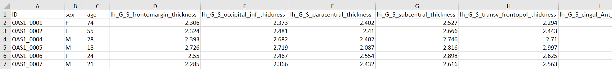

The file must be in .xls or .xlsx format. And the check-button "Old data format" must be activate!
The data order of the columns is ID, sex, age. The remaining columns are 74 regions of the left hemisphere and 74 regions of the right hemisphere. All column names must exist, but related data can be null. In this OASIS data set, there are 300 data sets in total.
The txt files obtained after analysis in Freesurfer can be immediately used further in the Shiny app. The check-button "Old data format" should not be activated this time! The picture shows an example of the reloading process of the files. The file demograhics.csv has additional information about the patients (like gender and age).
You can filter the columns and information as you wish. To restart the Shiny App use the Restart-Button.
Different users have different names for the same brain region, so in this Shiny App you can import a file for this. The file must be also in .xls or .xlsx format. You can customize the brain region name to the name you want with the template areas.xlsx. In this file, the left column is the original name of the region (do not change) and in the right column is the user-defined name. Use for this the Names correction FileInput.